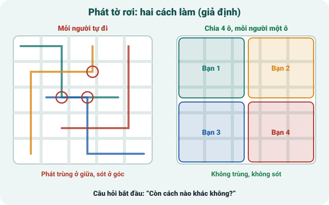

K4 · Sáng tạo và cải tiến › Bậc 1 Làm quen
Hỏi "còn cách nào khác?" và nêu một ý tưởng cho nhóm
Bài Bậc 1 (Làm quen). Bài Bậc 2 tiếp theo: Thử một cách làm mới nhỏ.
1. Mục tiêu
- Nghĩ ra ít nhất 3 cách làm cho một nhiệm vụ trước khi chọn.
- Nêu một ý tưởng cho nhóm trong 2 câu: là gì, giúp được gì.
2. Khởi động truy xuất
- Khi kế hoạch đổi, bạn hỏi 2 câu nào?
- Khi làm chưa được, vì sao chỉ nên đổi một điểm rồi thử lại?
Đáp án
- "Giờ em làm việc gì trước?" và "Việc đang làm dở thì sao?"
- Để biết điểm thay đổi đó có giúp hay không.
Xem lại: Khi kế hoạch đổi.
3. Giải thích
Sáng tạo ở nơi làm việc thường rất nhỏ. Không cần phát minh. Chỉ cần thấy một cách làm nhanh hơn, gọn hơn, ít sai hơn.
Thói quen dễ nhất để bắt đầu là một câu hỏi: "Còn cách nào khác không?"
Vì sao nên nghĩ nhiều cách trước khi chọn? Ý tưởng đầu tiên thường là cách quen nhất, chưa chắc là cách tốt nhất. Khi buộc mình nghĩ ra 3 cách, bạn thường thấy thêm lựa chọn tốt hơn.
Ba câu gợi ý để nghĩ ra cách khác
- Bỏ bớtBước nào có thể bỏ mà kết quả vẫn đạt?
- Gộp hoặc đổi thứ tựHai việc nào làm cùng lúc được? Làm việc nào trước thì đỡ đi lại?
- Mượn cáchNgười khác, nơi khác làm việc này thế nào?
Nêu ý tưởng cho nhóm trong 2 câu. Câu 1: ý tưởng là gì. Câu 2: giúp được gì. Ví dụ: "Mình chia slide theo người trình bày, không theo chương. Như vậy mỗi người tự sửa phần mình, đỡ chờ nhau."
Nói ngắn giúp nhóm nghe hết và dễ góp ý. Nếu nhóm chọn cách khác, cũng không sao. Bạn vẫn giúp nhóm có thêm lựa chọn.
Hai điều nên tránh:
- Chê ý của người khác để nâng ý của mình. Hãy nói "thêm một cách nữa là…".
- Tự ý đổi cách làm của cả nhóm khi chưa ai đồng ý.
Ở Bậc 1, mục tiêu là nêu ý tưởng. Việc thử và đo kết quả sẽ học ở Bậc 2.
4. Ví dụ tại nơi làm việc Việt Nam
Tình huống giả định. Nhóm 4 sinh viên làm thêm phát tờ rơi cho một cửa hàng sách. Mỗi người tự đi một hướng, nhiều khu bị phát trùng.
Nhi hỏi cả nhóm: "Còn cách nào khác không?" Nhóm nghĩ ra 3 cách:
- Chia bản đồ khu vực thành 4 ô, mỗi người một ô.
- Hẹn nhau ở ngã tư, báo trong nhóm chat khu nào đã phát.
- Phát ở 2 điểm đông người cố định, đổi người mỗi giờ.
Nhi nêu ý: "Mình chia bản đồ thành 4 ô, mỗi người một ô. Như vậy không phát trùng và biết khu nào còn sót."

Vì sao cách này tốt: nhóm có 3 lựa chọn trước khi chọn. Ý tưởng được nói trong 2 câu, rõ lợi ích.
5. Thực hành
Tình huống giả định. Lớp bạn chuẩn bị gian hàng bán đồ uống ở hội chợ trường. Năm ngoái, khách phải xếp hàng lâu vì một người vừa nhận tiền vừa pha nước.
Nghĩ ra 3 cách khác, rồi viết 2 câu nêu một ý tưởng.
Gợi ý 1
Dùng ba câu gợi ý: bỏ bớt, gộp hoặc đổi thứ tự, mượn cách của quán ngoài.
Gợi ý 2
Quán trà sữa thường chia việc thế nào giữa người thu tiền và người pha?
Lời giải mẫu
Ba cách: tách người thu tiền và người pha; pha sẵn một số ly trước giờ đông; chỉ bán 3 món để pha nhanh.
Ý tưởng: "Mình tách một bạn thu tiền và ghi phiếu, hai bạn chỉ pha. Như vậy khách không phải chờ một người làm hết."
6. Tự kiểm tra
Chọn đáp án. Mỗi lựa chọn đều có giải thích.
Câu 1. Vì sao nên nghĩ ra ít nhất 3 cách trước khi chọn?
-
Chưa đúng. Ý đầu không luôn sai. Nhưng nó thường là cách quen nhất, chưa chắc tốt nhất.
-
Đúng. Đúng. Có nhiều lựa chọn thì dễ chọn được cách tốt hơn.
-
Chưa đúng. Mục đích là có thêm lựa chọn, không phải kéo dài thời gian.
Câu 2. Cách nêu ý tưởng nào phù hợp nhất?
-
Chưa đúng. Chê ý người khác làm nhóm khó nghe và khó hợp tác.
-
Đúng. Đúng. Hai câu: ý tưởng là gì và giúp được gì, không chê ai.
-
Chưa đúng. Tự ý đổi cách làm của nhóm khi chưa ai đồng ý dễ gây rối.
Câu 3. "Bước nào có thể bỏ mà kết quả vẫn đạt?" là câu gợi ý nào?
-
Đúng. Đúng. Câu hỏi này tìm bước thừa trong cách làm.
-
Chưa đúng. Mượn cách là xem người khác, nơi khác làm thế nào.
-
Chưa đúng. Gộp là làm hai việc cùng lúc, không phải bỏ bước.
Câu 4. Nhóm chọn cách khác, không chọn ý tưởng của bạn. Bạn nên nghĩ thế nào?
-
Chưa đúng. Ý tưởng của bạn vẫn giúp nhóm có thêm lựa chọn để so sánh.
-
Đúng. Đúng. Nêu ý tưởng là đóng góp, dù nhóm chọn cách khác.
-
Chưa đúng. Im lặng làm nhóm mất đi những ý có thể tốt hơn.
7. Phản tư
- Trong một việc bạn làm hằng ngày, bước nào có thể bỏ hoặc gộp?
- Điều gì làm bạn ngại nêu ý tưởng trước nhóm?
8. Áp dụng thật
Trong 7 ngày tới, chọn một nhiệm vụ nhóm hoặc một việc ở chỗ làm. Nghĩ ra 3 cách làm, rồi nêu một ý tưởng trong 2 câu. Ghi lại nhóm đã phản hồi thế nào.
9. Siêu dữ liệu
| skill | K4 · Sáng tạo và cải tiến |
|---|---|
| level | Bậc 1 · Làm quen |
| group | N2 |
| framework_map | WEF: Creative thinking; CSfW: 3d Create and innovate; SkillsFuture CCS: Creative Thinking; EntreComp: Spotting opportunities; Creativity (chỉ dẫn chiếu) |
| updated | 2026-11-14 |
Hoàn thành bài
Đánh dấu đã học để site gợi ý lịch ôn sau 1, 3 và 7 ngày. Dữ liệu chỉ lưu trên máy của bạn.
Lịch ôn gợi ý: